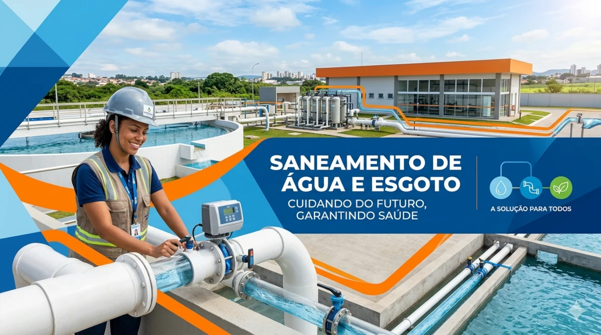
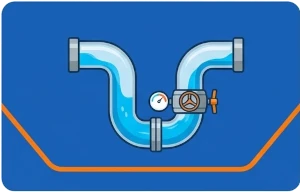
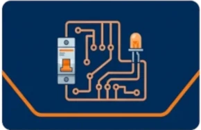
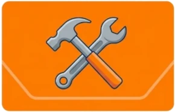
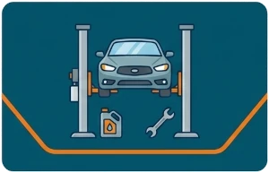
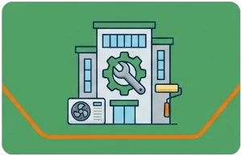
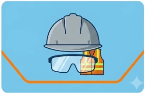

SaneWeb

Bem-vindo ao SaneWeb
O SaneWeb é um portal dedicado a fornecer informações e recursos sobre saneamento básico, hidráulica, eletromecânica, ferramentas e segurança. Nosso objetivo é promover o conhecimento e a conscientização sobre esses temas essenciais para a saúde pública e o meio ambiente.





